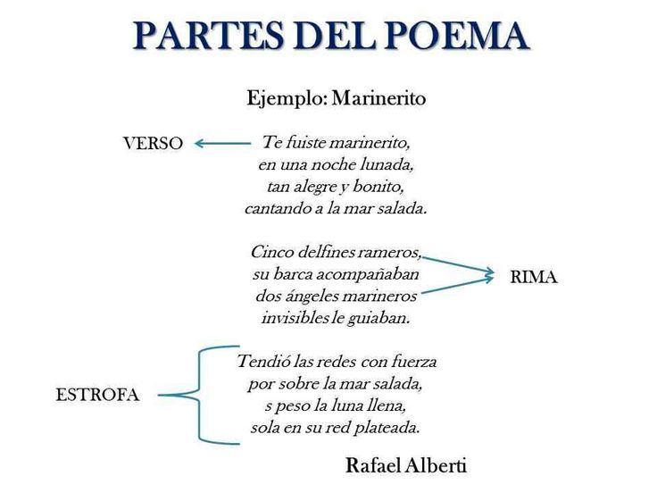

Explicame un poema
❇️ ¿Qué son los poemas?
Los poemas son textos escritos en verso. Tienen musicalidad y ritmo.Los poemas expresan sentimientos y emociones desde el corazón y la mente: alegrÃa, tristeza, amor, admiración, decepción, sorpresa...Â
❓¿Has visto que el poema tiene varias partes?
☑️ Esas partes se llaman estrofas
👁️‍🗨️ Además cada lÃnea se llama verso.
